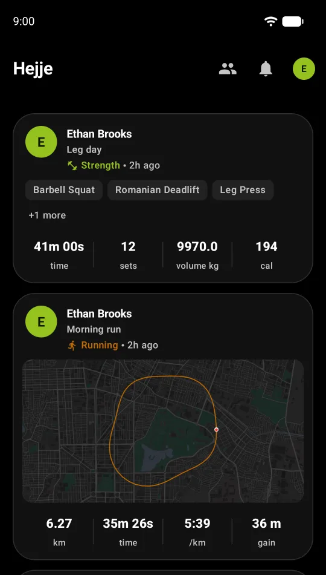
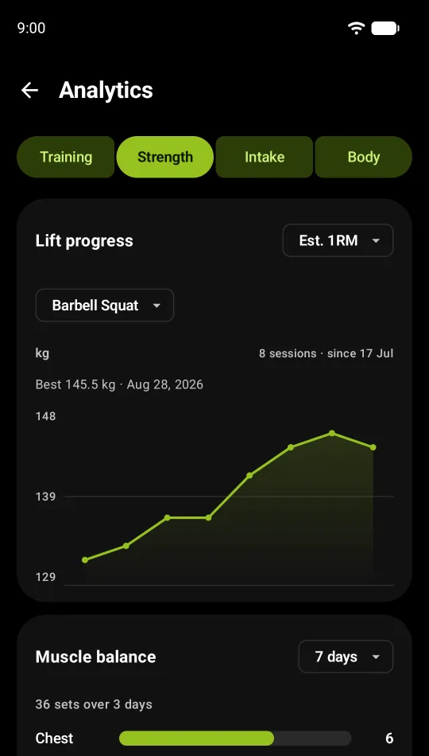
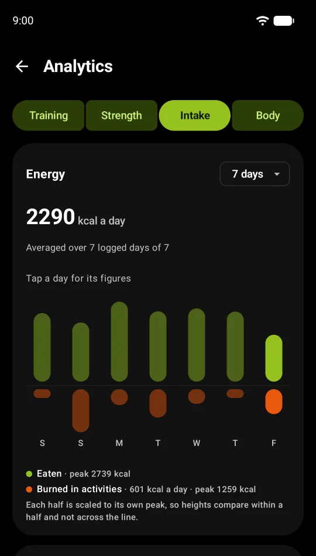

Senior software engineer. I build products end to end and run them in production: backends, mobile apps, and lately the small devices that talk to them.
Mysuru, India · Open to relocating to Norway and the Nordics
Selected work
hejje
2026 · my own product
A privacy-first fitness tracker for running, the gym, food and weight. Live on Google Play and the App Store.



I founded and built hejje alone in four months. Everything you log is encrypted on the phone before it syncs, so the server stores data it cannot open, and the whole app works offline.
A Go backend I run in production: JSON REST API, signed requests, rate limiting, separate dev and prod, nightly backups.
End-to-end encryption with a recovery key, and a sync protocol that converges after offline edits.
Native apps in Kotlin and Jetpack Compose on Android and SwiftUI on iOS, plus a Windows companion app.
Offline maps the server cuts for any of 34,000 cities on demand, and Kaya, an assistant that answers questions about your training on the device.
Since mid-2026 I have built everything new by directing AI coding agents (Claude Code). hejje's server and apps and the clock's firmware above were written that way. My part is the part that decides whether the result is any good:
Deciding what to build and how it fits together: architecture, data model, protocols and security.
Reviewing every change, and testing it on real devices before it ships.
Running it: servers, deploys, backups, store releases and incidents.
Debugging in the field, from server logs, a user's screen recording, or a probe on a wire.
It lets one person ship what used to take a team. It does not replace understanding: I can explain every design on this page, and I would be glad to.